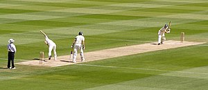

Roger Wrightson

Roger Wilfred Wrightson (29 October 1939 – 13 September 1986) was an English cricketer. Wrightson was a left-handed batsman who occasionally fielded as a wicket-keeper.
Although born in Elsecar, Yorkshire to Frederick Liddell Wrightson and Jessie Arline Hague, Wrightson was raised in Essex where his family moved to when his father took up a teaching position in the county.[1] It was in Grays that he was educated at Palmer's School, going from there to Loughborough University.[2] His father first introduced Wrightson to cricket when he was a child, according to Wrightson had made him, along with his brothers bat as left-handers.[2] Prior to playing county cricket he became a primary school teacher in Thurrock.